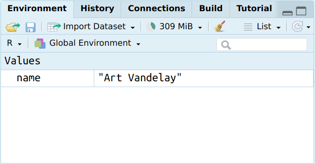
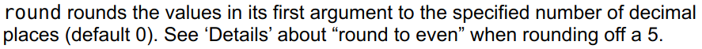
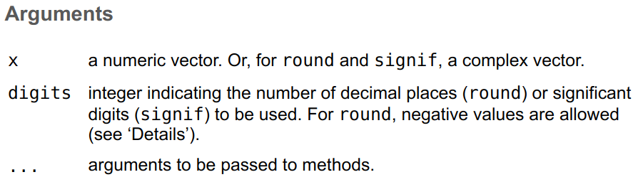
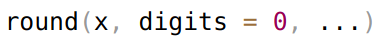

name <- "Art Vandelay"3 Grundlagen
Wie nutzen wir R? Wie aus den bisherigen Ausführung klar wurde, schreiben wir Code. Dieser Code enthält unsere Aufforderungen an R, zu tun, was wir angeben. Einmal in der Konsole eingegeben, wertet ein sog. interpreter die Eingabe aus.1 Was bei der Eingabe zu beachten ist, schauen wir uns in diesem Kapitel an.
In diesem Kapitel lernen wir…
- …nach welchen Regeln wir Code schreiben.
- …was Variablen, Objekte und Funktionen sind.
- …wie wir Pakete installieren und nutzen.
- …welche Datentypen wir in R am häufigsten nutzen.
- …in welchen Strukturen wir Daten am häufigsten antreffen.
3.1 Eingabe und Syntax
Prinzipiell geben wir Code in die Konsole (Kapitel 2.1.1) ein und bestätigen die Eingabe mit Enter. Dabei ist Code aber nicht gleich Code. Es ist wichtig, wie wir ihn schreiben. Dabei müssen wir einige zentrale Regeln beachten.
3.1.1 Rechtschreibung und Stil
R ist sensibel für Groß- und Kleinschreibung (case-sensitive). Ein Objekt mit dem Namen my_object ist also nicht dasselbe wie myObject. Zwecks besserer Lesbarkeit haben sich einige Konventionen zur Trennung von Bestandteilen durchgesetzt. Während manche Nutzer*innen Code im sog. camelCase durch regelmäßige Verwendung von Großbuchstaben schreiben, schreiben andere ihn im. sog. snake_case mit Unterstrichen als Trennelement. Auch Punkte (.) werden gerne als Trennelemente verwendet. Am wichtigsten ist, eine Schreibweise konsistent zu befolgen.
R akzeptiert zur Eingabe nur lateinische Buchstaben (Aa–Zz) und arabische Ziffern (0–9) sowie ausgewählte Sonderzeichen, die wir noch kennenlernen werden. Variablen können nur mit Buchstaben beginnen.
3.1.2 Klammern und Anführungszeichen
Runde (()) und eckige ([]) Klammern sowie Anführungszeichen (sowohl einfache [''] wie doppelte [""]) müssen stets geschlossen sein. Passiert dies nicht, wird der Code nicht ausgeführt und die Eingabeaufforderung zeigt statt eines > ein + an. Das Symbol heißt hier, dass die Eingabe unvollständig ist und zusätzlicher Zeichen (deshalb +) bedarf. RStudio hilft uns aber meist dadurch, dass automatisch das jeweils zweite Zeichen eingefügt wird, sobald wir eine solche Eingabe in der Konsole beginnen.
3.1.3 Kommentare
Jede Zeile, die mit einem # beginnt, gilt als Kommentar und wird gelesen, aber nicht ausgeführt. Kommentare sind sinnvoll, um für uns selbst und für andere festzuhalten, was der Code macht.
3.1.4 Operatoren
Die einfachste Nutzung von R ist mit der eines Taschenrechners zu vergleichen. Weil wir mit dessen Symbolen und Operationen vertraut sind, kennen wir die folgenden Operatoren:
+steht für Addition. Geben wir5 + 2in die Konsole ein, gibt uns diese als Ergebnis[1] 72 aus.-steht für Subtraktion. Geben wir5 - 2in die Konsole ein, gibt uns diese als Ergebnis[1] -3aus./steht für Division. Geben wir5 / 2in die Konsole ein, gibt uns diese als Ergebnis[1] 2.5aus.*steht für Multiplikation. Geben wir5 * 2in die Konsole ein, gibt uns diese als Ergebnis[1] 10aus.**sowie^stehen für Exponentiation. Geben wir5 ** 2oder5^2in die Konsole ein, gibt uns diese als Ergebnis[1] 25aus.
3.2 R: Objektorientiert und funktional
Nachdem wir bereits vereinzelt Begriffe wie “Variable”, “Objekt” oder “Funktion” genutzt haben, ist es nötig, näher zu bestimmen, worum es sich genauer handelt. Zunächst halten wir fest, dass R eine objektorientierte und funktionale Programmiersprache ist. Objektorientiert heißt, dass wir mit R ständig Objekte erzeugen und nutzen. Damit grenzt sich R z.B. von klick-orientierten Statistikprogrammen wie SPSS o.ä. ab. Funktional heißt, dass in R Funktionen die grundlegende Art sind, die Möglichkeiten von R zu nutzen.3 John Chambers, der den R-Vorgänger S mitentwickelte, fasst diese Merkmale wie folgt zusammen:
Um Berechnungen in R zu verstehen sind zwei Sätze hilfreich:
Alles, was existiert, ist ein Objekt.
Alles, was passiert, ist ein Funktionsaufruf. (Chambers 2014)
Die Vorteile dieser Art von Programmierung gegenüber der Nutzung von Tabellenkalkulationssoftware wie Excel besteht darin, dass wir eine Reihe von Anweisungen zur Ausführung von Aufgaben einfach verfassen und endlos wiederholen und verändern können.
3.2.1 Objekte
3.2.1.1 Zuweisen
Ein Objekt ist etwas, was wir in R erzeugen, um es später erneut zu benutzen. Wir speichern also etwas ab und weisen ihm einen Namen zu. Diese Zuweisung (assignment) erfolgt mit dem Operator <-.4 Wenn wir zum Beispiel einen Namen5 als Objekt mit dem Namen name abspeichern wollen, können wir dies so tun:
Wenn wir diesen Code in der Konsole von RStudio ausgeführt haben, erscheint das Objekt name im unserer Umgebung rechts oben.

3.2.1.2 Zugreifen
Einmal erzeugt, können wir auf dieses Objekt nun immer wieder zugreifen, indem wir in der Konsole lediglich name eingeben.
name[1] "Art Vandelay"Standardmäßig gibt R jedes Objekt, dessen Namen wir ohne Veränderung in die Konsole eingeben, einfach wieder aus. Aber Vorsicht: Wie zuvor angemerkt, ist die Rechtschreibung hier wichtig. Wollen wir nämlich auf ein Objekt Name anstelle von name zugreifen, können wir das nicht tun, weil wir ein solches Objekt noch nicht erzeugt haben. Probieren Sie es aus: statt "Art Vandelay" in die Konsole zu drucken, sagt R mit Error: object 'Name' not found, dass es ein Objekt mit diesem Namen nicht finden konnte.
3.2.1.3 Verändern
Außer darauf zuzugreifen, können wir Objekte auch (in Abhängigkeit davon, um welchen Datentyp es sich handelt, Kapitel 3.4) verändern. Zum Beispiel können wir ein neues Objekt names year erzeugen und ihm den Wert 2024 zuweisen.
year <- 2024Um den Inhalt des neuen Objekts sehen zu können, können wir entweder in das environment-Fenster schauen oder year in die Konsole eingeben.
year[1] 2024Um diesen Umweg zu umgeben, ist es auch möglich, Code in Klammern zu setzen. Damit führt R den Code aus und gibt das Ergebnis wieder.
(year <- 2024)[1] 2024Im nächsten Schritt wollen wir das nächstfolgende Jahr angeben. Hierfür können wir year so behandeln, als handele es sich direkt um den Wert 2024 und eine einfache Addition vornehmen. Wir behandeln year jetzt also als Variable.
year + 1[1] 2025Von dieser Berechnung bleibt das Objekt year aber unberührt. Sein Wert beträgt nach wie vor 2024.
year[1] 2024Wenn wir diesen Wert verändern wollen, können wir das Ergebnis unserer Berechnung einfach demselben Objekt zuweisen und den ursprünglichen Wert damit überschreiben.
year <- year + 1
year[1] 2025
Objekte überschreiben
Anders als wir es von Dateimanagern Ihres Betriebssystems oder anderer Software kennen, können wir uns nicht darauf verlassen, dass R fragt, ob es ein bereits bestehendes Objekt überschreiben darf. Grundsätzlich überschreibt R Objekte ohne jede Warnmeldung.
3.2.1.4 Entfernen
Was wir erzeugen können, können wir auch wieder entfernen. Zu jedem Zeitpunkt können wir uns alle Objekte, die in unserem workspace existieren mit ls() (list) anzeigen lassen. Bis hierhin sieht unser “Inventar” so aus:
ls()[1] "name" "year"Wenn wir das Objekt year nicht weiter benötigen, können wir es mit rm() (remove) aus unserem workspace entfernen.
rm(year)Betrachten wir erneut den Inhalt unseres veränderten workspace, stellen wir fest, dass year nicht mehr existiert.
ls()[1] "name"Dabei ist wichtig, dass die Entscheidung, ein Objekt zu entfernen, endgültig ist und wir sie nicht rückgängig machen können.
3.2.2 Funktionen
Das Aufrufen von Funktionen ist also von zentraler Bedeutung. Was genau aber ist eine Funktion? In R ist eine Funktion eine bestimmte (Reihe an) Ausführungen, mittels derer aus einem Eingabewert (input) ein Ausgabewert (output) errechnet wird. Outputs können dabei nicht nur einfache Werte wie Zahlen, sondern auch kompliziertere Datenstrukturen sein. Sie bilden die Basis für Algorithmen, automatischen Methoden zur Ausführung mehrerer mathematischer Operationen.
3.2.2.1 Parameter und Argumente
In R funktionieren Funktionen immer nach dem Schema, dass sie einen Namen, gefolgt von runden Klammern (()), tragen. Innerhalb der Klammer geben wir Parameter, Bestandteile der Funktion, an. Parameter, die eine Funktion zwingend benötigt, sind notwendige Parameter. Solche, die hingegen nicht zwingend benötigt werden, sind optionale Parameter. Die Werte, die wir einem Parameter zuweisen, werden als Argument bezeichnet.6
Ein Beispiel: round()
Am einfachsten lassen sich diese Begriffe an einem Beispiel zeigen. Dafür ziehen wir die Funktion heran, mit der wir eine Zahl runden können. In R existiert hier für eine Funktion mit dem Namen round(). Mit ?round können wir in der Hilfe lesen, was diese Funktion tut.

?round.Die Hilfe erklärt, dass round eine beliebige Dezimalzahl rundet und zwar eine angegebene (specified) Anzahl an Dezimalstellen (decimal places). Diese Anzahl betragt standardmäßig (default) 0. Dieser letzte Punkt ist wichtig, denn viele Funktionen nutzen für bestimmte Parameter Standardwerte als Argumente, sodass sich immer ein Blick in die Dokumentation lohnt.
Weiter nennt uns die Hilfe auch alle Parameter, die round() nutzt.

round().Hier können wir lesen, dass der erste Parameter namens x als Argument einen numerischen Vektor7 (numeric vector) benötigt. Grundsätzlich heißt bei den meisten Funktionen der erste Parameter x. Der zweite Parameter namens digits nimmt als Argument eine ganze Zahl (integer). Diese Zahl gibt an, auf wieviele Dezimalstellen (decimal places) die Zahl gerundet werden soll. Der Standardwert ist 0, wie in der Hilfe auch gezeigt wird. digits = 0 heißt, dass der Wert, das Argument, vom Parameter digits der Funktion immer 0 ist, sofern wir ihn nicht verändern.

round() als Codebeispiel.Nachdem wir round() kennengelernt haben, rufen wir die Funktion jetzt das erste Mal auf. Die Zahl, die wir runden möchten, also x, ist 1.23456789. Ohne weitere Parameter explizit zu verändern, rundet R diese Zahl wie erwartet auf 1.
round(x = 1.23456789)[1] 1Was aber, wenn wir auf die erste Dezimalstelle runden möchten? Hierfür müssen wir nur den Standardwert von digits, der als Argument quasi “im Hintergrund” angegeben war, von 0 in 1 ändern. Schon rundet R die Zahl auf den Wert von 1.2.
round(x = 1.23456789, digits = 1)[1] 1.2Solange wir die Reihenfolge der Argumente einhalten, können wir übrigens die Namen der Argumente weglassen, wie diese zwei gleichwertigen Eingaben zeigen:
round(x = 1.23456789, digits = 1)[1] 1.2round(1.23456789, 1)[1] 1.2
Argumente nennen oder nicht?
Gerade zu Beginn ist es ratsam, Argumente zu nennen, um sie uns besser einzuprägen. Allerdings werden Sie in Beispielen in Lehrbüchern oder Internetforen regelmäßig in dieser Hinsicht “sparsamem” Code begegnen. Lassen Sie sich davon aber nicht zu schnell inspirieren. Als erste Faustregel gilt: Erst, wenn Sie die Argumente einer Funktion in der richtigen Reihenfolge aus dem Gedächtnis heraus nennen können, sollten Sie erwägen, sie im Code nicht mehr zu schreiben. Als zweite Faustregel gilt jedoch, dass das meist mit x benannte erste Argument von Funktionen eine Ausnahme darstellt. Hier ist es auch zu Beginn in Ordnung, x = wegzulassen.
3.2.2.2 Verschachtelung
Wenn wir mit Daten arbeiten, kommt es selten vor, dass wir nur eine einzige Funktion nutzen wollen. Meistens wollen wir mehrere Arbeitsschritte durchführen, wofür wir auch mehrere Funktionen nutzen. Wie würden wir hier vorgehen? Die erste Möglichkeit wäre, im ersten Arbeitsschritt ein neues Objekt als output zu erzeugen, das im zweiten Arbeitsschritt als input dienen würde, um wiederum einen neuen output zu erzeugen.
In einem Beispiel möchten wir aus der Zahl 2 mit sqrt() die Quadratwurzel ziehen und diese Wurzel (1.414214) mit round() runden. Das Ergebnis möchten wir uns dann ausgeben lassen. Wir könnten diese Aufgabe in zwei Schritten erledigen:
ergebnis_1 <- sqrt(2)zieht die Wurzel und weist das Ergebnis einem Objekt namensergebnis_1zu.round(ergebnis_1)rundetergebnis_1und gibt das Ergebnis in der Konsole wieder.
ergebnis_1 <- sqrt(2)
round(ergebnis_1)[1] 1Statt zwei Zeilen Code zu schreiben, könnten wir als zweite Möglichkeit aber auch all diese Schritte in einer einzigen Zeile bewerkstelligen. Hierfür nutzen wir das Prinzip verschachtelter Funktionen (nested functions), indem wir innerhalb einer Funktion eine andere Funktion als input nutzen. Statt ergebnis_1 können wir also auch direkt sqrt(2) in die Funktion eingeben.
round(sqrt(2))[1] 1Das Ergebnis ist dasselbe. Verschachtelte Funktionen sind deshalb eine wichtige Möglichkeit, nützlichen (und platzsparenden) Code zu schreiben.
3.2.2.3 Die Pipe
Verschachtelte Funktionen sind nützlich, stoßen aber an ihre Grenzen, wenn wir zwei, drei, vier, …, ∞ Funktionen miteinander verschalten wollen. Als Alternative, insbesondere unter den Nutzer*innen des tidyverse hat sich in den letzten Jahren die pipe (“Rohr”) etabliert. Hierbei handelt es sich um eine Funktion, die den output einer Funktion direkt als input in das erste Argument einer weiteren Funktion leitet – eben wie ein…Rohr. In älterem Code wird diese Funktion mit %>%, in neuerem mit |> dargestellt. Innerhalb von RStudio können wir die Tastaturkombination Strg+Shift+M nutzen, um |> einzufügen.8 Am einfachsten ist es, |> als Anleitung zu lesen: Mach erst dies, dann das.
Das vorherige Beispiel round(sqrt(2)) könnte unter Nutzung der pipe so geschrieben werden:
library(tidyverse) # tidyverse laden, um |> nutzen zu können
2 |>
sqrt() |>
round()[1] 1Als guter Stil hat sich etabliert, dass auf |> ein Zeilenumbruch (line break) folgt und die nächste Funktion eingerückt (indented) wird. Wenn wir beim Schreiben nach |> Shift+Enter drücken, geschieht dieser Zeilenumbruch mit Einrückung automatisch.
2 |>
sqrt() |>
round()[1] 1Die pipe ist etwas, was in vielen anderen Programmiersprachen in dieser Form nicht existiert. Sie zu nutzen, ist empfehlenswert, um klar strukturierten und gut lesbaren Code zu schreiben. In diesem Kurs werden wir daher von |> großzügigen Gebrauch machen.
3.3 Pakete
Wie bereits erwähnt, liegen die Funktionen von R in Form sog. packages vor. Starten wir R, so wird lediglich die “Grundanstattung” geladen.9 Sämtliche anderen Funktionen müssen separat installiert und geladen werden.
3.3.1 Installation
Wir können, wie bereits in der Einführung, Pakete mit install.packages() installieren, wobei wir den Namen des Pakets in einfache Anführungszeichen ("") setzen müssen. Installieren müssen wir die Pakete nur einmal. Sind sie installiert, können wir über den Reiter Packages10 in RStudios output-Fenster über die Schaltfläche Update überprüfen, ob wir installierte Pakete aktualisieren müssen.
3.3.2 Nutzung
Einmal installiert, müssen wir jedes Mal, wenn wir die Inhalte eines Pakets zum ersten Mal in einer neuen Sitzung nutzen wollen, das jeweilige Paket mit library() laden. Hierbei können wir den Namen des Pakets wie zuvor in einfache Anführungszeichen setzen oder nicht – R macht keinen Unterschied.
Packages first!
Wenn wir für eine neue Auswertung ein R-Skript anlegen, sollten die ersten Zeilen immer die benötigten Pakete laden. Gerade zu Beginn kann es hilfreich sein, einen Kommentar zu hinterlassen, um sich einzuprägen, wozu wir ein bestimmtes Paket heranziehen:
library(tidyverse) # U.a. für Nutzung der PipeIn allen folgenden Kapiteln werden wir zu Beginn immer die benötigten Pakete zuerst laden.
3.4 Datentypen
R kann mit vielen unterschiedlichen Daten arbeiten. Dabei müssen wir jedoch zwischen den Datentypen und den Datenstrukturen unterscheiden. Datentypen sind die Bezeichnungen dafür, um was für eine Art Daten es sich handelt. Datenstrukturen hingegen sind die Bezeichnungen dafür, in welcher Form diese Daten vorliegen. Sowohl im Fall von Datentypen wir auch Datenstrukturen können die sog. Objektklasse mit class() überprüfen.
3.4.1 Character
Der erste Datentyp, den wir kennengelernt haben, war Text: mit name <- "Art Vandelay" haben einen Namen eingegeben. Im Kontext von Programmiersprachen sprechen wir allerdings nicht von Text, sondern meist von characters (Buchstaben) oder auch strings (“aneinandergehängten” Buchstaben) als Dateityp. Sie zeichnen sich dadurch aus, dass sie in einfache ('') oder doppelte ("") Anführungszeichen gesetzt werden. Für welche der beiden Schreibweisen Sie sich entscheiden, ist R dabei egal.
name <- "Art Vandelay"Auf Nachfrage bestätigt uns R, dass es sich um ein Objekt mit der Klasse character handelt.
class(name)[1] "character"3.4.2 Factor
Text bzw. Wörter haben keine gängige Ordnung wie sie Zahlen oder Datumsangaben haben. Sofern nicht anders angegeben, wird R deshalb mehrere Wörter immer alphabetisch ordnen. Wollen wir aber Wörtern eine bestimmte Ordnung geben (z.B. "bad", "neutral" und "good") oder es handelt sich um Bezeichnungen von Gruppen von Beobachtungen sprechen wir von factors. Geben wir diese Antworten jedoch ohne Veränderungen an, bekommen wir nach wie vor bloß ein character-Objekt heraus.
replies <- c("bad", "neutral", "good")
class(replies)[1] "character"Um hingegen Faktoren zu erzeugen, also Text mit einer Ordnung, nutzen wir am einfachsten die Funktion factor(), der wir einen Vektor (Kapitel 3.5.1) mit Textelementen geben sowie einen zweiten Vektor als levels, der die Reihenfolge angibt. Lassen wir uns das neu erzeugte Objekt replies_factor in der Konsole ausgeben, nennt uns R auch die nunmehr geordneten Antwortmöglichkeiten.
replies_factor <- factor(replies,
levels = c("bad", "neutral", "good"))
replies_factor[1] bad neutral good
Levels: bad neutral goodAuf Nachfrage bestätigt uns R, dass es sich um ein Objekt mit der Klasse factor handelt.
class(replies_factor)[1] "factor"3.4.3 Numeric
Neben Text sind numerische Daten besonders wichtig, denn sie stellen oft die Grundlage für Berechnungen und Auswertungen dar. Dezimalzahlen werden in R meist als numeric, also numerische Daten, bezeichnet. Sie einzugeben erfordert keine Sonderzeichen.
1[1] 1one <- 1
one[1] 1Auf Nachfrage bestätigt uns R, dass es sich um bei one um ein Objekt mit der Klasse numeric handelt.
class(one)[1] "numeric"3.4.4 Integer
Manchmal kann es notwendig sein, statt Dezimalzahlen ganze Zahlen (integers) zu verwenden. Ganze Zahlen können wir dabei wie zuvor erzeugen, wenn wir nur der Zahl noch ein L beifügen.
1L[1] 1one_integer <- 1L
one_integer[1] 1Auf Nachfrage bestätigt uns R, dass es sich um bei one_integer um ein Objekt mit der Klasse integer handelt.
class(one_integer)[1] "integer"Wir erkennen also, dass eine von R ausgegebene Zahl wie 1 unterschiedliche Datentypen haben kann. Diese müssen wir aber selbst in Erfahrung bringen. Dafür werden wir im Kursverlauf noch weitere Möglichkeiten kennenlernen.
3.4.5 Date
Viele Daten weisen einen Zeitbezug auf, der von Jahreszahlen bis hin zu genaueren Angaben wie Minuten, Sekunden oder noch kleineren Einheiten reichen kann. R kann auch mit Daten diesen Typs arbeiten.
Zur Anschauung beschränken wir uns jedoch auf einfache Datumsangaben. Dabei ist das bevorzugte Format YYYY-MM-DD also eine vierstellige Jahreszahl (year), gefolgt von einer zweistelligen Monatszahl (month) und einer zweistelligen Tageszahl (day), jeweils getrennt durch ein -. Wie dies aussieht, können wir am Beispiel des jeweiligen Datums des Rechners, an dem wir arbeiten, zeigen. Mit Sys.Date() können wir uns das Datum des Rechners, auf dem wir R gerade nutzen anzeigen lassen:
Sys.Date()[1] "2025-01-28"Auf Nachfrage bestätigt uns R, dass es sich bei dem output dieser Funktion um ein Objekt mit der Klasse Date handelt.
class(Sys.Date())[1] "Date"Möchten wir selbst ein Datum angeben, müssen wir jedoch beachten, dass ein lediglich in der von uns als richtig gelesenen Form eingegebener Wert nicht ausreicht, denn das Ergebnis wird von R als character verstanden.
class("1945-05-08")[1] "character"Um aus einem string wie diesem ein Date-Objekt zu machen, müssen wir es R mit der Funktion date() genau sagen.
class(date("1945-05-08"))[1] "Date"Neben "Date" gibt es im UniveRsum auch noch weitere Datentypen, die Datums- und Zeitangaben enthalten. Allgemein gilt: Kennen wir einen Datentyp nicht, sollten wir ihn vor der Nutzung recherchieren.
3.4.6 Logical
In der Informatik, also auch beim Programmieren, spielen logicals (logische Werte) – die auch als Boolean values (Boolesche Werte) bezeichnet werden – eine wichtige Rolle. Diese Werte sind binär, können also nur TRUE (wahr) oder FALSE (unwahr/falsch) sein. Dabei entsprechen TRUE-Werte einer 1 und FALSE-Werte einer 0.
class(TRUE)[1] "logical"TRUE * 1[1] 1FALSE * 1[1] 0Dieser Datentyp ist besonders wichtig, um Bedingungen zu überprüfen und dafür Vergleiche anzustellen.
Lang- und Kurzschreibweise
Grundsätzlich geht es vielen Programmier*innen darum, mit möglichst kurzem Code möglichst viele Arbeitsschritte abzudecken. Das heißt, es wird generell geschaut, ob innerhalb eines Codes Zeichen eingespart werden können. Ein Beispiel haben wir bereits kennengelernt: Das Weglassen von Parameterbezeichnungen innerhalb von Funktionen, sofern wir sie in der richtigen Reihenfolge verwenden. Auch bei der Verwendung von logischen Werten gibt es eine Möglichkeit: Statt TRUE können wir schlicht T, statt FALSE schlicht F schreiben. Dabei gilt jedoch zu vorherige Regel, dass wir uns erst, wenn wir R besser kennengelernt haben, auf derlei Kurzschreibweisen verlassen sollten.
3.4.7 Sonstige
Es gibt in der Welt von R noch mehr Datentypen als die bislang vorgestellten. Wie meist gilt jedoch, dass wir uns mit diesen erst beschäftigen sollten, wenn wir sie wirklich nutzen wollen und müssen.
3.4.8 Mit Datentypen arbeiten
3.4.8.1 Vergleichen
Im Rahmen von Vergleichen schauen wir, ob zwischen zwei oder mehreren Werten derselben Objektklasse eine von uns vorgegebene Eigenschaft vorhanden ist oder nicht. Das Ergebnis eines solchen Vergleichs kann dabei nur richtig (TRUE) oder falsch (FALSE) sein, weshalb hier das Verständnis logischer Datentypen (Kapitel 3.4.6) wichtig ist.
In Vergleichen kommen regelmäßig uns tweils bereits bekannte Operatoren zum Einsatz:
>und<(“größer” bzw. “kleiner”): Ist2 > 1? Ja, das Ergebnis istTRUE. Aber umgekehrt, ist2 < 1? Nein, das Ergebnis istFALSE.>=und<=(“größer-gleich” bzw. “kleiner-gleich”): Ähnlich wie zuvor, nur ist auch bei gleichen Werten das ErgebnisTRUE.==(“gleich”): Sind1 + 1 == 2? Ja, das Ergebnis istTRUE. Dass wir hier ein doppeltes Gleichzeichen verwenden (müssen), liegt daran, dass=genau wie<-als Zuweisungsoperator genutzt werden kann.11!(“nicht”): Dieser Operator verkehrt jedes Ergebnis in sein Gegenteil, sodass!TRUEetwa das ErgebnisFALSEausgibt.2 != 3überprüft also, ob 2 wirklich “ungleich” 3 ist und gibt folglich als ErgebnisTRUEaus.&(“und”): Mit diesem Operator können logische Werte verknüpft werden. Das Ergebnis ist nurTRUE, wenn alle WerteTRUEsind.2 > 1 & 3 > 2ist alsoTRUE, weil beide VergleicheTRUEsind. Drehen wir den ersten Vergleich in2 < 1 & 3 > 2um, ist bei einemTRUE- und einemFALSE-Ergebnis das Endergebnis folglichFALSE.|(“oder”): Dieser Operator funktioniert wie&, nur dass erTRUEausgibt, wenn mindestens einer der WerteTRUEist. Wie im letzten Beispiel würde2 < 1 | 3 > 2also in diesem FallTRUEsein.%in%(“ist enthalten”): Dieser Operator überprüft, ob ein Wert in einem Vektor anderer Werte vorhanden ist. Wenn wir2 %in% c(1, 2, 3)schauen wollen, ob 2 innerhalb des Vektors, der 1, 2 und 3 umfasst, enthalten ist, ist das ErgebnisTRUE, bei4 %in% c(1, 2, 3)wäre es hingegenFALSE.
3.4.8.2 Objektklasse überprüfen
Wir können nicht nur mit class() und ähnlichen Funktionen nachschauen, welchen Dateityp ein Objekt hat, sondern auch direkt mit der is.*()-“Familie” an Funktionen nachfragen, ob es sich z.B. um einen string (is.character()), eine Dezimalzahl (is.numeric()), eine ganze Zahl (is.integer()) usw. handelt. Das Ergebnis ist immer ein logischer Wert.
is.character("Bin ich ein String?")[1] TRUEis.numeric("1")[1] FALSEis.numeric(1)[1] TRUE3.4.8.3 Objektklasse transformieren
Neben der Familie der is.*()-Funktionen gibt es auch solche, die Datentypen von einem in einen anderen transformieren können. Dabei handelt es sich um die as.*()-Funktionen, die wie die is.*()-Funktionen in einer Reihe von Varianten vorliegen.
Sinnvolle Transformationen können wir also schnell vornehmen. Eine Zahl in einen string umzuwandeln (oder umgekehrt), stellt kein Problem dar, wenn der Inhalt ein Zahlensymbol ist:
as.character(1)[1] "1"as.numeric("1")[1] 1Gleichzeitig gibt es aber Umwandlungen, die nicht funktionieren können:
as.numeric("Words as numbers? Not so fast!")Warning: NAs introduced by coercion[1] NAR erzeugt in solchen Fällen NAs (not available oder not assigned), die häufigste Form fehlender Werte.12
3.5 Datenstrukturen
Nachdem wir wissen, welche Datentypen es gibt, müssen wir verstehen, in welcher Form wir sie in R nutzen. Ähnlich, wie wir auf geschriebene Informationen in Gestalt unterschiedlicher Formate (z.B. Stichpunkten, Fließtext oder einer Tabelle), nutzt auch R unterschiedliche Strukturen zum Zugriff und zur Verarbeitung von Daten. Etwas griffiger können wir uns Datenstrukturen also als “Container” für Daten vorstellen.
3.5.1 Vektor
3.5.1.1 Erstellen
Die grundlegenste Datenstruktur, die auch als das workhorse (Matloff 2011), also das “Arbeitspferd”, von R bezeichnet wird, ist der Vektor. Ein Vektor ist eine eindimensionale Reihe von einem oder mehreren Elementen gleichen Typs. Wir erzeugen diese Reihe mit der uns bereits begegneten Funktion c(), die für concatenate (“aneinanderhängen”, “verbinden”) steht. Einen Vektor der Zahlen 1 bis 5 erstellen wir also so:
c(1, 2, 3, 4, 5)[1] 1 2 3 4 5Dabei gibt die [1] im output an, dass der Wert 1 der erste Wert des Vektors ist. Das mag auf den ersten Blick unnötig erscheinen, jedoch kann dieser Hinweis nützlich sein, wenn ein Vektor, der ausgegeben wird, die Länge der ersten Zeile der Konsole übersteigt.
Sinnvolle Funktionen, um numerische Vektoren zu erstellen sind:
:: Mit1:5können wir einen Vektor aller Zahlen zwischen 1 und 5 erzeugen und uns besonders bei langen Reihen eine Menge Tipperei sparen. Dabei lässt sich:auch umdrehen, sodass5:1dieselben Zahlen in absteigender Reihenfolge liefert.seq()(sequence): Mit einer Eingabe wieseq(from = 1, to = 5, by = 1)können wir abermals den besagten Vektor erstellen. Ändern wir aber den Argument des Parametersby, können wir auch die Schritte, in denen wir Zahlen erzeugen, bestimmen, sodass unsseq(from = 1, to = 5, by = 2)nur einen Vektor von drei Zahlen, 1, 3, 5, ausgibt. Verwenden wir statt dem dritten Parameterbyden Parameterlength.out, können wir bestimmen, wieviele Werte unser neuer Vektor haben soll.seq(from = 10, to = 20, length.out = 5)liefert uns also 10, 12.5, 15, 17.5, 20.rep()(repeat): Mit einer Eingabe wierep(x = 1, times = 3)können wir einen Vektor erzeugen, der den Wert/die Wertextimes-mal wiederholt, sodass das Ergebnis dieser Eingabe uns eine Vektor von drei Zahlen, 1, 1, 1, ausgibt.rev()(reverse): Mit dieser Funktion können wir die Reihenfolge der Elemente eines Vektorsxumdrehen, sodassrev(1:3)uns einen “spiegelverkehrten” Vektor 3, 2, 1 ausgibt.sort(): Mit dieser Funktion können wir die Elemente eines Vektors numerisch oder alphabetisch aufsteigend ordnen, dasssort(c(3, 1, 5))uns einen Vektor 1, 3, 5 ausgibt.
Natürlich können wir einen Vektor als einem Objekt (Kapitel 3.2.1) zuschreiben und aufrufen.
my_vector <- c(1, 2, 3, 4, 5)
my_vector[1] 1 2 3 4 53.5.1.2 Konstante Vektoren
R verfügt über eine Reihe konstanter Vektoren. Dabei handelt es sich um Vektoren, die bei jeder R-Sitzung neu – aber immer gleich, also konstant – geladen werden, aber nicht im environment aufgelistet werden. Sie umfassen
letters: Alle Buchstaben des Alphabets in Kleinschrift.LETTERS: Alle Buchstaben des Alphabets in Großschrift.month.name: Alle Monatsnamen auf Englisch.month.abb: Alle abgekürzten Monatsnamen auf Englisch.
3.5.1.3 Eigenschaften erfragen
Seine Objektklasse können wir ebenso wie zuvor mit class() herausfinden.
class(my_vector)[1] "numeric"Seine Länge, also die Anzahl der Elemente, können wir mit length() erfragen.
length(my_vector)[1] 53.5.1.4 Rechnen
Insbesondere mit numerischen Vektoren lässt sich besonders einfach rechnen.13 Für die grundlegendsten statistischen Berechnungen liegen eingebaute Funktionen vor:
- Lagemaße:
mean(): Diese Funktion berechnet den Mittelwert eines Vektors.mean(my_vector)ergibt folglich 3.median(): Diese Funktion berechnet den Median eines Vektors.median(my_vector)ergibt folglich 3.
- Streuungsmaße:
sd(): Diese Funktion berechnet die Standardabweichung eines Vektors.sd(my_vector)ergibt folglich 1.5811388.IQR(): Diese Funktion berechnet den Interquartilsabstand eines Vektors.IQR(my_vector)ergibt folglich 2.var(): Diese Funktion berechnet die Varianz eines Vektors.var(my_vector)ergibt folglich 2.5.
- Extremwerte:
min(): Diese Funktion berechnet das Minimum eines Vektors.min(my_vector)ergibt folglich 1.max(): Diese Funktion berechnet das Maximum eines Vektors.max(my_vector)ergibt folglich 5.
- Arithmetik:
sum(): Diese Funktion berechnet die Summe eines Vektors.sum(my_vector)ergibt folglich 15.log(): Diese Funktion berechnet den Logarithmus eines jeden Elements eines Vektors.log(my_vector)ergibt folglich 0, 0.6931472, 1.0986123, 1.3862944, 1.6094379.sqrt(): Diese Funktion berechnet die Quadratwurzel eines jeden Elements eines Vektors.sqrt(my_vector)ergibt folglich 1, 1.4142136, 1.7320508, 2, 2.236068.
Keine Sorge wegen Statistik
Zu diesem Zeitpunkt müssen wir noch nicht im Detail verstehen, was eine Interquartilsabweichung ist oder wofür die eine Varianz berechnen müssen. Merken wir uns nur, dass wir, wenn wir im Laufe unserer Arbeit Methoden anwenden möchten, die diese Schritte erfordern, auf entsprechende eingebaute R-Funktionen zurückgreifen können. Schließlich wurde R für genau solche Zwecke entwickelt.
3.5.1.5 Mit NA umgehen
In der Arbeit mit Vektoren und anderen Datenstrukturen begegnen uns regelmäßig NA-Werte (Kapitel 3.4.8). Wann auch immer R NA-Werte begegnen, erhalten wir eine Warnung. Diese Vorsicht ist sinnvoll, denn nicht immer sind sich die Benutzer*innen der Anwesenheit von NA-Werten bewusst und verstehen ihre Daten also nur eingeschränkt. Besonders deutlich wird dieser vorsichtige Umgang, wenn wir mit einem Vektor rechnen wollen, der einen NA-Wert enthält.
my_vector <- c(1, 2, 3, 4, 5, NA) # Vektor mit NA-Wert erzeugen
mean(my_vector)[1] NADieser output (NA statt 3) überrascht uns, deutet aber auf ein wichtiges Prinzip hin. Wann immer wir R auffordern, eine Berechnung mit NA-Werten durchzuführen, werden wir als Ergebnis ebenfalls NA erhalten. Das ist so, weil R nicht weiß bzw. von uns nicht gesagt bekommt, wie es mit einem fehlenden Wert rechnen soll, und uns folglich kein Ergebnis liefert. Dieses Prinzip gilt nicht nur für mean(), sondern ebenso für sum() oder ähnliche Funktionen.
Um dennoch eine Berechnung anstellen zu können, müssen wir R explizit sagen, dass wir NA-Werte vorher ausschließen möchten. Das können wir tun, indem wir den Parameter na.rm (remove non-available values, das den Standardwert FALSE hat) auf TRUE setzen.
mean(my_vector, na.rm = TRUE)[1] 33.5.1.6 Transformieren
Mit Vektoren können wir so wie mit anderen Objekten verfahren, wenn es um Transformationen im weiteren Sinne geht. Dabei sprechen wir von der Nutzung vektorisierter Funktionen, die eine bestimmte Veränderung auf alle Elemente eines Vektors anwenden. Ein einfaches Beispiel für dieses Prinzip ist die Veränderung unseres Vektors my_vector so, dass jedes Elemente um 1 erhöht oder 2 multipliziert, also mittels einer Berechnung wird:
my_vector[1] 1 2 3 4 5my_vector + 1[1] 2 3 4 5 6my_vector * 2[1] 2 4 6 8 10Auch Vergleiche können wir mit einem Vektor anstellen. Um zu überprüfen, welche Elemente unseres Vektors größer als 3 sind, behandeln wir den Vektor abermals wie ein Objekt:
my_vector > 3[1] FALSE FALSE FALSE TRUE TRUEDas Ergebnis ist ein Vektor mit der gleichen Länge wie my_vector, der allerdings nur aus logischen Werten besteht. Um zu verstehen, was wir mit einem solchen Vektor anfangen können, müssen wir verstehen, was es mit einem anderen zentralen Konzept von base R auf sich hat – Indizes.
3.5.1.7 Indizes nutzen
Ein Index beschreibt die Position eines Elements innerhalb einer Datenstruktur. Im Falle eines Vektors greift R mit der Schreibweise x[i] auf das i-te Element des Vektors x. Diese Beschreibung wird einfacher, wenn wir z.B. auf das dritte Element (also "C") aus LETTERS zugreifen möchten.
LETTERS[3][1] "C"Wenn wir auf mehrere Elemente zugreifen möchten, können wir das mithilfe eines anderen Vektors tun. Möchten wir die Initialen von Art Vandelay ausgeben, benötigen wir das erste und das 22. Element von LETTERS:
LETTERS[c(1, 22)][1] "A" "V"Und natürlich können wir diese Werte auch in umgekehrter Reihenfolge ausgeben, wenn wir den Indexvektor verändern.
LETTERS[c(22, 1)][1] "V" "A"Wie können uns Indizes helfen, um Werte auszuwählen, die eine Bedingung erfüllen müssen? Hier können wir auf unser obiges Beispiel zurückgreifen, bei dem my_vector > 3 uns einen Vektor mit logischen Werten FALSE, FALSE, FALSE, TRUE, TRUE lieferte. Genau diesen zweiten Vektor können wir nun nutzen, um den ersten auszuwerten. Dazu nutzen wir die TRUE/FALSE-Werte des Vektors als Index:
my_vector[my_vector > 3][1] 4 5Das Ergebnis liefert einen Vektor, der nur noch die beiden Zahlen – 4 und 5 – liefert, die tatsächliche größer als drei sind. Wenn uns das nicht sofort einleuchtet, können wir auch noch ein “Zwischenobjekt” mit entsprechendem Namen erzeugen, um den Schritt klarer zu dokumentieren.
larger_than_three <- my_vector > 3
my_vector[larger_than_three][1] 4 5which()
Die Indexschreibweise, um nur solche Werte auszuwählen, die eine Bedingung erfüllen, wird oft auch mit der Funktion which() verwendet. Dabei handelt es sich um eine Funktion, die nur die Positionen einer Wertereihe angibt, an denen ein Wert eine Bedingung erfüllt. Während my_vector > 3 einen Vektor mit fünf logischen Werten (nämlich FALSE, FALSE, FALSE, TRUE, TRUE) ausgibt, gibt which(my_vector > 3) einen Vektor mit bloß zwei numerischen Werten (nämlich 4, 5) aus.
Auch diesen Vektor könnten wir mit my_vector[which(my_vector > 3)] zum Auswählen nutzen. In diesem Fall wäre egal, welche Methode wir verwenden. Bei der Arbeit mit größeren Datenmengen, könnte aber ein “kürzerer” Vektor aus Speicher- und Schnelligkeitsgründen wichtig sein.
3.5.2 Liste
Ein Vektor allein kann viele Daten enthalten, aber eben nur vom selben Datentyp bzw. von derselben Objektklasse. Daher stellt sich die Frage, wie wir in R mehrere Vektoren kombinieren können. Die erste Datenstruktur, die dabei sehr häufig genutzt wird, ist die Liste. Vorstellen können wir uns eine Liste am einfachsten als eine Art “Einkaufsliste”:

Eine solche Liste enthält geordnete unterschiedliche Aufzählungen, die ihrerseits oft einen Namen (z.B. “Obst” oder “Gemüse”) tragen. Ähnlich funktioniert eine Liste in R: Sie ist ein Objekt, das selbst wiederum mehrere Objekte enthalten kann. Listen werden mit der Funktion list() erzeugt. Wenn wir eine Liste mit zwei Objekten, unserem Vor- und Nachnamen erzeugen wollen, könnten wir dies so tun:
my_list <- list("Art",
"Vandelay")
my_list[[1]]
[1] "Art"
[[2]]
[1] "Vandelay"Unser output besteht nun aus einer Liste mit zwei Komponenten, nämlich [[1]] und [[2]], die ihrerseits jeweils einen Wert enthalten. Möchten wir den Komponenten Namen geben, müssen wir unseren Code nur leicht verändern:
my_list <- list(vorname = "Art",
nachname = "Vandelay")
my_list$vorname
[1] "Art"
$nachname
[1] "Vandelay"Diese Liste enthält bislang nur zwei Komponenten, die beide character-Vektoren enthalten. Eine Liste kann aber auch Elemente aller anderen Datentypen enthalten.
my_list <- list(first_name = "Art",
last_name = "Vandelay",
date = Sys.Date(), # Datumsangabe
random_numbers = rnorm(n = 5)) # Zufallszahlen erzeugen
my_list$first_name
[1] "Art"
$last_name
[1] "Vandelay"
$date
[1] "2025-01-28"
$random_numbers
[1] -1.639716894 0.009473728 0.170779145 1.611659084 -0.642393795Im Prinzip ist eine Liste also eine mächtige Datenstruktur. Dabei müssen wir verstehen, dass nicht nur – wie in unserem Beispiel – Vektoren also Komponente dienen können. Tatsächlich kann eine Liste auch selbst weitere Listen enthalten:
my_list <- list(first_name = "Art",
last_name = "Vandelay",
date = Sys.Date(),
random_numbers = rnorm(n = 5),
my_second_list = list(component_character = "Ein Wort", # Zweite Liste erzeugen
component_numeric = 1:5))
my_list$first_name
[1] "Art"
$last_name
[1] "Vandelay"
$date
[1] "2025-01-28"
$random_numbers
[1] -0.655230208 -0.007225251 -0.571441022 -0.612850974 1.092268424
$my_second_list
$my_second_list$component_character
[1] "Ein Wort"
$my_second_list$component_numeric
[1] 1 2 3 4 5Einen geordneten Überblick über unsere Liste ermöglicht uns str() (structure, mehr dazu weiter unten bei data frames).
str(my_list)List of 5
$ first_name : chr "Art"
$ last_name : chr "Vandelay"
$ date : Date[1:1], format: "2025-01-28"
$ random_numbers: num [1:5] -0.65523 -0.00723 -0.57144 -0.61285 1.09227
$ my_second_list:List of 2
..$ component_character: chr "Ein Wort"
..$ component_numeric : int [1:5] 1 2 3 4 5Listen können also sehr weit verschachtelt werden. Deshalb kommen sie oft als output bestimmter Funktionen vor, die größere Berechnungen anstellen. Es lohnt sich also, eine Liste als solche zu erkennen, wenn wir ihr begegnen.
Da wir selbst jedoch in diesem Kurs selbst nahezu keine Listen erstellen werden, begnügen wir uns hiermit. Auf das Verwenden von Listen unter Nutzung von Indizes o.ä. gehen wir daher hier nicht weiter ein.14
3.5.3 Data Frame
Die zweite Datenstruktur, die bei der Arbeit mit R eine besonders wichtige – und im Rahmen dieses Kurses die zentrale – Rolle spielt, ist der data frame (“Datenrahmen”). Bei einem data frame handelt es sich um eine zweidimensionale Tabelle von Werten. Wie in jeder Tabelle unterscheiden wir in ihr Zeilen (rows) und Spalten15 (columns). Eine einzelne Zeile mit Werten verschiedener Spalten wird als Beobachtung (observation) bezeichnet.
In diesem Abschnitt möchten wir zunächst die gängigsten Methoden zur Nutzung von data frames im Rahmen von base R kennenlernen. Zwar werden wir darüber hinaus vor allem neuere Funktionen des tidyverse zu nutzen lernen, die Grundlagen von base R werden jedoch so regelmäßig verwendet oder tauchen bei der eigenen Recherche auf, dass sich eine Auseinandersetzung bewähren wird.
R verfügt über eine Reihe eingebauter data frames zu Übungszwecken. Einen solchen werden wir uns jetzt näher anschauen, um den Aufbau und die Verwendung besser zu verstehen. Dabei handelt es sich um mtcars, einen Datensatz, der Informationen zu gewissen Automobilen aus den Jahren 1973–1974 enthält.16
3.5.3.1 Überblick verschaffen
Wenn wir eine Tabelle in Form eines data frame besser kennenlernen wollen, müssen wir ihn uns zunächst anschauen. Am einfachsten ist es, mit View() die Tabelle in einem eigenen Fenster zu öffnen.
View(mtcars)Diese Ansicht unterscheidet sich nicht stark von der eines normalen Tabellenkalkulationsprogramms wie Excel. Uns wir die gesamte Tabelle angezeigt, wobei die Fußzeile uns angibt, welche Zeilen wir gerade betrachten und wieviele Spalten vorhanden sind. Mit der Filter-Schaltfläche können wir zudem interaktiv in unserer Tabelle bestimmte Werte auswählen.
Sind wir allerdings in RStudio unterwegs, sind separate Fenster nicht immer nötig. Stattdessen können wir uns leicht mit Konsoleneingaben über die Beschaffenheit der Tabelle Informationen anzeigen lassen:
dim()(dimensions): Diese Funktion gibt uns einen Vektor mit zwei Zahlen aus. Dabei steht die erste Zahl für die Anzahl an Reihen, die zweite Zahl für die Anzahl an Spalten.dim(mtcars)gibt uns an, dassmtcarsaus 32 Zeilen und 11 Spalten besteht.ncol()(number of columns): Diese Funktion gibt uns einen Vektor mit einer Zahl aus, die für die Anzahl an Spalten steht.nrow()(number of rows): Diese Funktion gibt uns einen Vektor mit einer Zahl aus, die für die Anzahl an Reihen steht.head(): Diese Funktion gibt die ersten sechs Zeilen des data frame (dessen “Kopf”) in der Konsole aus.17 Möchten wir statt der ersten sechs Zeilen eine beliebige Zahl Zeilen anzeigen lassen, müssen wir den zweiten Parameter der Funktion (n) entsprechend anpassen.tail(): Diese Funktion gibt die letzten sechs Zeilen des data frame (dessen “Schweif”) in der Konsole aus. Möchten wir statt der letzten sechs ZeilennZeilen anzeigen lassen, müssen wir hier ebenso den zweiten Parameter der Funktion entsprechend anpassen.colnames()(column names): Diese Funktion gibt die Spaltennamen alscharacter-Vektor aus.rownames(): Diese Funktion gibt die Zeilennamen alscharacter-Vektor aus.
Besonders nützlich ist auch die Funktion str()(structure), die uns zahlreiche Informationen auf einen Blick liefert:
- Der Objekttyp von
mtcarsistdata.frame. mtcarshat 32 Zeilen und 11 Spalten.- Alle 11 Spalten haben den Datentyp
num(also numeric). - Darüber hinaus werden uns bereits die Werte der ersten Beobachtungen angezeigt, alle übrigen mit
...abgeschnitten.
str(mtcars)'data.frame': 32 obs. of 11 variables:
$ mpg : num 21 21 22.8 21.4 18.7 18.1 14.3 24.4 22.8 19.2 ...
$ cyl : num 6 6 4 6 8 6 8 4 4 6 ...
$ disp: num 160 160 108 258 360 ...
$ hp : num 110 110 93 110 175 105 245 62 95 123 ...
$ drat: num 3.9 3.9 3.85 3.08 3.15 2.76 3.21 3.69 3.92 3.92 ...
$ wt : num 2.62 2.88 2.32 3.21 3.44 ...
$ qsec: num 16.5 17 18.6 19.4 17 ...
$ vs : num 0 0 1 1 0 1 0 1 1 1 ...
$ am : num 1 1 1 0 0 0 0 0 0 0 ...
$ gear: num 4 4 4 3 3 3 3 4 4 4 ...
$ carb: num 4 4 1 1 2 1 4 2 2 4 ...3.5.3.2 Indizes nutzen
Wie auch im Falle von Vektoren können wir auf bestimmte Daten innerhalb eines data frame anhand ihrer Indexwerte zugreifen. Wohingegen ein Vektor aber nur einen Indexwert benötigte (die Position innerhalb der Reihe), können wir in einem data frame sowohl einen Zeilen-, als auch einen Spaltenbereich angeben. Dabei lautet die grundsätzliche Schreibweise data.frame[r, c], wobei r und c für einen bestimmten Bereich an Zeilen oder Spalten stehen.
Wollen wir also nur den ersten Wert der ersten Spalte ausgeben, können wir dies mit mtcars[1, 1] tun. Das Ergebnis ist ein Vektor.
mtcars[1, 1][1] 21Wenn unsere Zeilen und Spalten, wie im Fall von mtcars, benannt sind, können wir die Angabe der Position auch von [1, 1] in die Nennung der Namen ändern.
mtcars["Mazda RX4", "mpg"][1] 21Wollen wir alle Werte der ersten Spalte ausgeben, lassen wir die erste Angabe einfach leer. Wieder ist das Ergebnis ein Vektor.
mtcars[, 1] [1] 21.0 21.0 22.8 21.4 18.7 18.1 14.3 24.4 22.8 19.2 17.8 16.4 17.3 15.2 10.4
[16] 10.4 14.7 32.4 30.4 33.9 21.5 15.5 15.2 13.3 19.2 27.3 26.0 30.4 15.8 19.7
[31] 15.0 21.4Umgekehrt funktioniert es natürlich auch, wenn wir nur die ersten Werte aller Spalten ausgeben möchten. Weil es sich bei solchen Abfragen ja um eine Tabelle mit unterschiedlichen Datentypen handeln könnte (obgleich dies bei mtcars nicht der Fall ist) und R diese unterschiedlichen Werte nicht als Vektor desselben Datentyps darstellen könnte, ist das Ergebnis ein data frame.
mtcars[1, ] mpg cyl disp hp drat wt qsec vs am gear carb
Mazda RX4 21 6 160 110 3.9 2.62 16.46 0 1 4 4Einen Bereich können wir auswählen, indem wir dem Index selbst keine einzelnen Werte (also Vektoren mit der Länge 1), sondern solche mit mehreren geben. Sprich, um etwa die ersten drei Zeilen und die ersten vier Spalten auszuwählen, würden wir entsprechende Vektoren nutzen.
mtcars[1:3, 1:4] mpg cyl disp hp
Mazda RX4 21.0 6 160 110
Mazda RX4 Wag 21.0 6 160 110
Datsun 710 22.8 4 108 933.5.3.3 $-Operator
Eine weitere Möglichkeit, um auf die Werte einer Spalte in einem data frame zuzugreifen, ist, einen Operator zu nutzen: $. Dieser Operator ist uns bereits begegnet: Sobald wir str() genutzt haben, um uns eine Liste oder einen data frame anzuschauen, gab R mit $ ein bestimmtes Listenelement bzw. eine bestimmte Spalte an.
str(mtcars)'data.frame': 32 obs. of 11 variables:
$ mpg : num 21 21 22.8 21.4 18.7 18.1 14.3 24.4 22.8 19.2 ...
$ cyl : num 6 6 4 6 8 6 8 4 4 6 ...
$ disp: num 160 160 108 258 360 ...
$ hp : num 110 110 93 110 175 105 245 62 95 123 ...
$ drat: num 3.9 3.9 3.85 3.08 3.15 2.76 3.21 3.69 3.92 3.92 ...
$ wt : num 2.62 2.88 2.32 3.21 3.44 ...
$ qsec: num 16.5 17 18.6 19.4 17 ...
$ vs : num 0 0 1 1 0 1 0 1 1 1 ...
$ am : num 1 1 1 0 0 0 0 0 0 0 ...
$ gear: num 4 4 4 3 3 3 3 4 4 4 ...
$ carb: num 4 4 1 1 2 1 4 2 2 4 ...Es ist daher naheliegend, dass wir mit mtcars$mpg alle Werte der Spalte mpg als Vektor ausgeben lassen können. Durch diese Schreibweise begreifen wir zudem, dass ein data frame letztlich nichts anderes als eine Kombination mehrerer Vektoren ist.
mtcars$mpg [1] 21.0 21.0 22.8 21.4 18.7 18.1 14.3 24.4 22.8 19.2 17.8 16.4 17.3 15.2 10.4
[16] 10.4 14.7 32.4 30.4 33.9 21.5 15.5 15.2 13.3 19.2 27.3 26.0 30.4 15.8 19.7
[31] 15.0 21.43.5.3.4 Verändern
Sobald wir wissen, wie wir mit Indizes oder dem $-Operator auf den Inhalt eines data frame zugreifen können, können wir mit unserem bisherigen Wissen auch dessen Inhalte verändern. Hierfür wählen wir ein Element (d.h., einen bestimmten Wert oder auch gleich eine ganze Spalte) aus und schreiben ihm mit <- einfach einen neuen Wert bzw. mehrere neue Werte zu.
Möchten wir zum Beispiel den Wert von mtcars[1, 1] auf 100 setzen, können wir diesem Element diesen Wert einfach zuweisen und damit den bisherigen Wert überschreiben.
mtcars[1, 1][1] 21mtcars[1, 1] <- 100
mtcars[1, 1][1] 100Auf ähnliche Weise verfahren wir, um neue Variablen/Spalten zu berechnen. Ein Anwendungsbeispiel für uns wäre, das Gewicht der Autos (wt, laut ?mtcars handelt es sich dabei um Weight (1000 lbs)) von pounds in Tonnen umzurechnen. Hierfür erzeugen wir unter Nutzung des $-Operators eine neue Variable namens tons und berechnen sie, indem wir alle Werte des Vektors wt mit 0.4518 multiplizieren.
mtcars$tons <- mtcars$wt * 0.45359237Siehe da – die neue Variable tons ist nun Teil von mtcars.
str(mtcars)'data.frame': 32 obs. of 12 variables:
$ mpg : num 100 21 22.8 21.4 18.7 18.1 14.3 24.4 22.8 19.2 ...
$ cyl : num 6 6 4 6 8 6 8 4 4 6 ...
$ disp: num 160 160 108 258 360 ...
$ hp : num 110 110 93 110 175 105 245 62 95 123 ...
$ drat: num 3.9 3.9 3.85 3.08 3.15 2.76 3.21 3.69 3.92 3.92 ...
$ wt : num 2.62 2.88 2.32 3.21 3.44 ...
$ qsec: num 16.5 17 18.6 19.4 17 ...
$ vs : num 0 0 1 1 0 1 0 1 1 1 ...
$ am : num 1 1 1 0 0 0 0 0 0 0 ...
$ gear: num 4 4 4 3 3 3 3 4 4 4 ...
$ carb: num 4 4 1 1 2 1 4 2 2 4 ...
$ tons: num 1.19 1.3 1.05 1.46 1.56 ...3.5.3.5 Erstellen
Nachdem wir bislang nur einem eingebauten data frame gearbeitet und begriffen haben, wie ein solcher funktioniert, möchten wir noch lernen, wie wir einen eigenen data frame erzeugen. Die wichtige Funktion hierbei ist data.frame(), mit dem wir Spalten einen Namen geben und dann mit dem =-Operator einen Inhalt zuweisen. Im Beispiel erzeugen wir einen data frame mit zwei Variablen und zehn Beobachtungen: je fünfmal vergeben wir den namen A und B und verknüpfen ihn mit einer Zufallszahl zahl.
data.frame(name = rep(c("A", "B"), times = 5), # Vektor wiederholen
number = rnorm(10)) # Zufallszahlen erzeugen name number
1 A 1.296606415
2 B -0.186121806
3 A -0.380265199
4 B 0.846355218
5 A -0.007353198
6 B 1.021917453
7 A 1.019699154
8 B -0.414554968
9 A 1.564275184
10 B -0.570575798Tatsächlich handelt es sich bei name aber nicht um einen character-String, sondern um einen factor, denn es handelt sich bei A und B um mehrere Beobachtungen derselben Gruppe. Standardmäßig behandelt data.frame() alle Texteingaben als character. Wollen wir das ändern, müssen wir den Parameter stringsAsFactors auf TRUE setzen.
data.frame(name = rep(c("A", "B"), times = 5),
zahl = rnorm(10),
stringsAsFactors = TRUE) # Strings als factors einlesen name zahl
1 A -1.4654663
2 B -0.3091842
3 A 0.8435259
4 B -0.4260960
5 A 0.1469855
6 B 1.5689090
7 A 1.2757797
8 B -0.9233325
9 A 2.4420428
10 B -0.1127494Und natürlich können wir unseren data frame als Objekt erstellen und dann darauf zugreifen.
my_data_frame <- data.frame(name = rep(c("A", "B"), times = 5),
zahl = rnorm(10),
stringsAsFactors = TRUE)
my_data_frame name zahl
1 A 0.3818675
2 B -0.3839172
3 A 0.6724293
4 B 0.2366412
5 A 0.5139548
6 B -0.6875128
7 A 1.1882096
8 B -3.4976603
9 A 1.3288991
10 B 0.29202613.5.4 Tibble
Im Rahmen des von uns noch zu entdeckenden tidyverse existiert eine Objektklasse, die eine modifizierte Form des data frame ist, die sog. tibble. Ihr größter Vorteil liegt darin, dass sie bei der Ausgabe in der Konsole platzsparender und übersichtlicher die Inhalt einer Tabelle darstellen. Bestehende data frames können mit dplyr::as_tibble() konvertiert werden.
class(my_data_frame)[1] "data.frame"my_data_frame <- dplyr::as_tibble(my_data_frame)
class(my_data_frame)[1] "tbl_df" "tbl" "data.frame"3.5.5 Sonstige
Wie zuvor im Falle der Datentypen, gibt es in der Welt von R noch mehr Datentypen als die bislang vorgestellten. Weiterhin gilt jedoch, dass wir uns mit diesen erst beschäftigen sollten, wenn wir sie wirklich nutzen wollen und müssen.
3.6 Übungsaufgaben
3.6.1 R als Taschenrechner
Lösen Sie die folgenden Aufgaben mit R.
3.6.2 Zuweisungen
Nehmen Sie die folgenden Zuweisungen vor. Überprüfen Sie mit class(), ob Sie ein Objekt der richtigen Klasse erzeugt haben.
var_1("logical"):TRUEvar_2("numeric"): 2.0var_3("integer"): 4var_4("character"): Ihr Namevar_5("numeric"): die Quadratwurzel ausvar_3var_6("numeric"): 5 1/2var_7("numeric"): das Vierfache vonvar_2var_8("numeric"):var_2multipliziert mitvar_3, geteilt durch 0.5var_9("Date"): das aktuelle Datum
3.6.3 Objektklassen
3.6.3.1 Überprüfen
Überprüfen Sie mit einer is.*()-Funktion, ob das Objekt der jeweiligen Klasse entspricht.
- Ist
var_1"numeric"? - Ist
var_3"integer"? - Ist
var_4"character"?
3.6.3.2 Transformieren
Geben Sie am Beispiel der Objekte var_1, …, var_9 Beispiele für die folgenden Transformationen mittels einer as.*()-Funktion.
"numeric"→"character""integer"→"numeric""logical"→"integer""logical"→"character""Date"→"character"
3.6.4 Vergleiche
Überlegen Sie, ob die Ergebnisse folgender Vergleiche TRUE oder FALSE sind. Überprüfen Sie Ihre Vermutung mit einer R-Eingabe.
2 > 22 == 22 = 221!TRUE!!TRUETRUE & FALSETRUE | FALSE(TRUE & FALSE) | TRUE1 %in% c(2, 3, 4)2 %in% c(2, 3, 4)2.5 %in% c(2, 3, 4)
3.6.5 Datenstrukturen
3.6.5.1 Erstellen
Erstellen Sie die folgenden Vektoren mit möglichst geringem Aufwand (1-6).
5, 6, 7, 8, 9, 1010, 9, 8, 7, 6, 520, 25, 30, 35, 400, 0.25, 0.5, 0.75, 1TRUE, TRUE, TRUE, TRUE, TRUETRUE, FALSE, TRUE, FALSE, TRUE, FALSE, TRUE, FALSE, TRUE, FALSE- Erstellen Sie eine Liste mit den folgenden Elementen:
- Ihr Name
- Ihr Geburtsdatum
- dem Vektor
1, 2, 3 - dem Wert
FALSE
- Erstellen Sie einen Data Frame, dessen erste Spalte (
col_1) die Werte1, 2, 3, 4, 5und dessen zweite Spalte (col_2) die Werte"a", "b", "c", "d", "e"enthält.
3.6.5.2 Erkunden
Erkunden Sie den vorinstallierten Data Frame WorldPhones mit entsprechenden Funktionen.
- Welche Dimensionen hat der Data Frame?
- Wie können wir uns die ersten beiden Zeilen anzeigen lassen?
- Wie können wir uns die letzten beiden Zeilen anzeigen lassen?
- Wie lauten die Spaltennamen?
- Wie lauten die Zeilennamen?
- Wie können wir die Anzahl an Spaltennamen mittels einer verschachtelten Funktion zählen? (Hinweis: Nutzen Sie
length().) - Wie können wir die Spaltennamen durch die deutschen Übersetzungen (als von uns eingetipptem Vektor) ersetzen? (Hinweis: Nutzen Sie
colnames()und den Zuweisungsoperator<-.)
3.6.5.3 Indexschreibweise
Nutzen Sie die Indexschreibweise ([]), um die folgenden Aufgaben zu lösen.
- Erstellen Sie mithilfe des konstanten Vektors
month.abbden Vektor"Mar" "Apr" "May". - Weisen Sie dem Vektor
20, 25, 30, 35, 40den Namenmy_vectorzu und ersetzen Sie dann den Wert 30 durch 26. - Wählen Sie aus
WorldPhonesnur die erste Spalte aus. - Wählen Sie aus
WorldPhonesnur die erste und die dritte Spalte aus. - Wählen Sie aus
WorldPhonesnur die ersten drei Zeilen der ersten und dritten Spalte aus.
3.7 Lösungen
3.7.1 R als Taschenrechner
10+58-35/28^3oder8**350 / (3 + 2)16^(1 / 2)bzw.16**(1 / 2)odersqrt(16)125^(1 / 3)bzw.125**(1 / 3)
3.7.2 Zuweisungen
var_1 <- TRUEvar_2 <- 2.0var_3 <- 4Lvar_4 <- "Tobias Klinge"var_5 <- sqrt(var_3)var_6 <- 5.5var_7 <- var_2 * 4var_8 <- (var_2 * var_3) / 0.5var_9 <- Sys.Date()
3.7.3 Objektklassen
3.7.3.1 Überprüfen
is.numeric(var_1)is.integer(var_3)is.character(var_4)
3.7.3.2 Transformieren
as.character(var_2)as.numeric(var_3)as.integer(var_1)as.character(var_1)as.character(var_9)
3.7.4 Vergleiche
FALSETRUE- Der Code ergibt eine Fehlermeldung, weil der Vergleich mit
==vorgenommen werden müsste. FALSETRUEFALSETRUETRUEFALSETRUEFALSE
3.7.5 Datenstrukturen
3.7.5.1 Erstellen
5:1010:5seq(from = 20, to = 40, by = 5)seq(from = 0, to = 1, by = 0.25)rep(TRUE, times = 5)rep(c(TRUE, FALSE), times = 5)
list("Tobias Klinge",
"2000-01-01",
1:3,
FALSE)data.frame(col_1 = 1:5,
col_2 = letters[1:5])3.7.5.2 Erkunden
dim(WorldPhones)head(WorldPhones, n = 2)tail(WorldPhones, n = 2)colnames(WorldPhones)rownames(WorldPhones)length(colnames(WorldPhones))colnames(WorldPhones) <- c("Nordamerika", "Europa", "Asien", "Südamerika", "Ozeanien", "Afrika", "Mittelamerika")
3.7.5.3 Indexschreibweise
month.abb[3:5]
my_vector <- seq(from = 20, to = 40, by = 5)
my_vector
my_vector[3] <- 26
my_vectorWorldPhones[, 1]WorldPhones[, c(1, 3)]WorldPhones[1:3, c(1, 3)]
Chambers, John M. 2014. „"Object-Oriented Programming, Functional Programming and R"“. Statistical Science 29 (2): 167–80.
Matloff, Norman. 2011. The Art of R Programming. A Tour of Statistical Software Design. San Francisco: No Starch Press.
R Core Team. 2024. „R Manuals: An Introduction to R“. https://rstudio.github.io/r-manuals/r-intro/.
Damit unterscheidet sich R von Programmiersprachen, die erst kompiliert, d.h. als Datei verfasst und dann ausgeführt, werden müssen. Alles, was wir eingeben, setzt R sofort um.↩︎
Das
[1]sagt uns, dass es sich um einen Vektor mit der Länge 1 handelt.↩︎Dabei ist für die spätere Nutzung interessant, zu wissen, dass Funktionen selbst wiederum ebenfalls Objekte sind.↩︎
In anderen Programmiersprachen wird oft das einfache Gleich-Zeichen (
=) verwendet. Das funktioniert in R auch, widerspricht jedoch der Konvention. Historisch ist der<--Operator wohl darauf zurückzuführen, dass ältere Computertastaturen eine solche Taste besaßen.↩︎Art Vandelay bezieht sich auf einen fiktiven Charakter der frühen Sitcom Seinfeld aus dem Jahr 1990.↩︎
Die Verwendung von Begriffen wie Parameter, Argument oder auch Option ist zwischen unterschiedlichen Autor*innen teils inkonsistent.↩︎
Was ein Vektor genauer ist, lernen wir in Kürze, für den Moment genügt es, von einer beliebigen Dezimalzahl zu sprechen.↩︎
Wenn RStudio nach Ihrer Installation mit Strg+Shift+M noch immer
%>%einfügt, können Sie dies mitTools→Global Options...→Code→Use native pipe operatorändern.↩︎Diese umfasst die packages
base,datasets,graphics,grDevices,methods,statsundutils.↩︎Hier befindet sich mit
Installauch eine grafische Möglichkeit, Pakete zu installieren.↩︎Die Verwechslung von
=und==ist vermutlich einer der verbreitetsten TippfehleR.↩︎Neben
NAgibt es in R noch den WertNaN(not a number), wenn etwa durch 0 dividiert wird,Inf, wenn Werte Richtung Unendlichkeit (infinity) laufen sowieNULL-Objekte, die noch nicht definiert, also “leer” sind. Derlei Begriffe schlagen wir am ehesten nach, wenn sie uns begegnen.↩︎Natürlich kann R auch mit anderen Datentypen rechnen, hierfür informiert man sich aber je nach Aufgabe am besten separat.↩︎
Eine gute Einführung in die Nutzung von Listen liefert Matloff (2011, Kap. 4) wie auch R Core Team (2024, Kap. 6).↩︎
Spalten werden oftmals auch Variablen (variables) genannt. Diese Verwendung kann zu Missverständnissen führen, denn in R erzeugte Objekte mit einem bestimmten Wert (wie oben
year) wird gleichermaßen oft als Variable bezeichnet. Hier ist für uns wichtig, uns regelmäßig zu fragen, ob wir unser Vokabular richtig verstehen.↩︎Mit
?mtcarskönnen wir mehr über den Datensatz erfahren.↩︎Ist die Tabelle zu breit, wird sie teils “abgeschnitten.”↩︎
1.000 pounds entsprechen 0.45359237 Tonnen.↩︎
Hier müssen Sie entweder überlegen, wie Sie eine Quadratwurzel mit den bekannten Operatoren ausdrücken können oder eine Funktion recherchieren.↩︎
Hier müssen Sie entweder überlegen, wie Sie eine Kubikwurzel mit den bekannten Operatoren ausdrücken können oder eine Funktion recherchieren.↩︎
Falls Sie das Ergebnis überrascht, überlegen Sie, worin der Unterschied zwischen
=und==liegt.↩︎